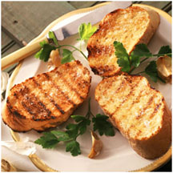

Bruschetta
Ingredients
- 4 large slices of bread, such as ciabatta, baguettes
- 1 garlic clove
- drizzle of extra virgin olive oil
Directions
- Grill, broil chargrill or toast the bread until it is crisp.
- Cut the garlic clove in half and rub the cut edge over both sides of each bread slice.
- Drizzle a little olive oil over each brad slice.